-
极简网络
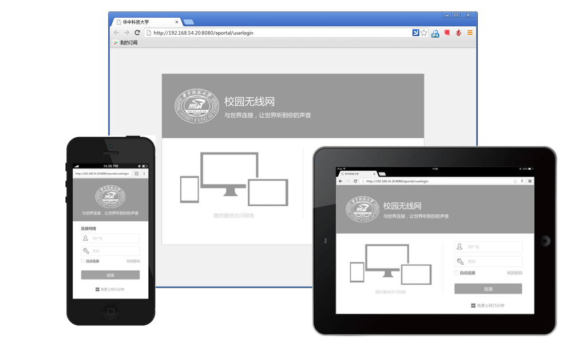
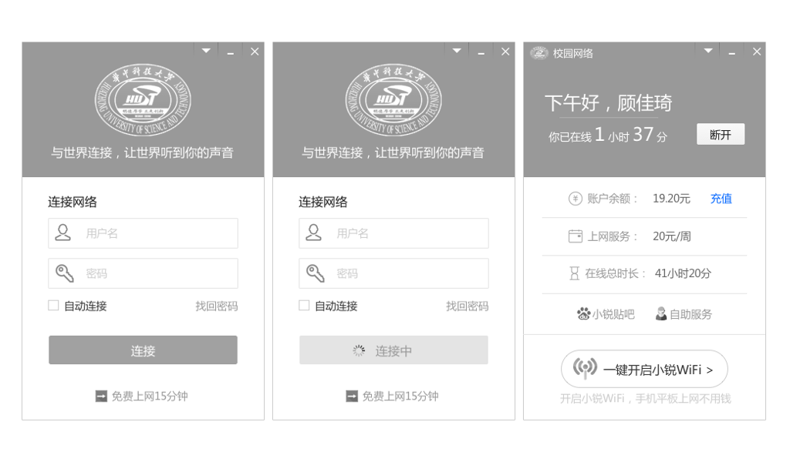
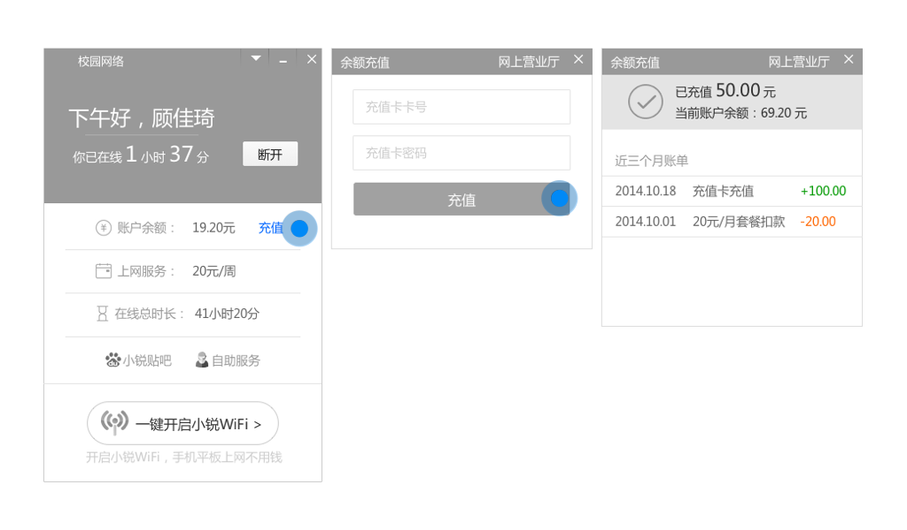
-
- 在极简网络环境下，用户可以使用电脑、手机、平板随时随地上网。
- 整个解决方案中涉及到多个产品，最早的版本没有UE设计，每个产品由不同团队开发，组合起来后，整体感觉不统一，不像一个公司的产品。改版的任务是：统一全系产品的布局和风格，同时，优化核心任务的流程。
- 设计理念：删除繁冗的信息；简化操作流程；适当的情感化设计点缀。
-
小网络·App
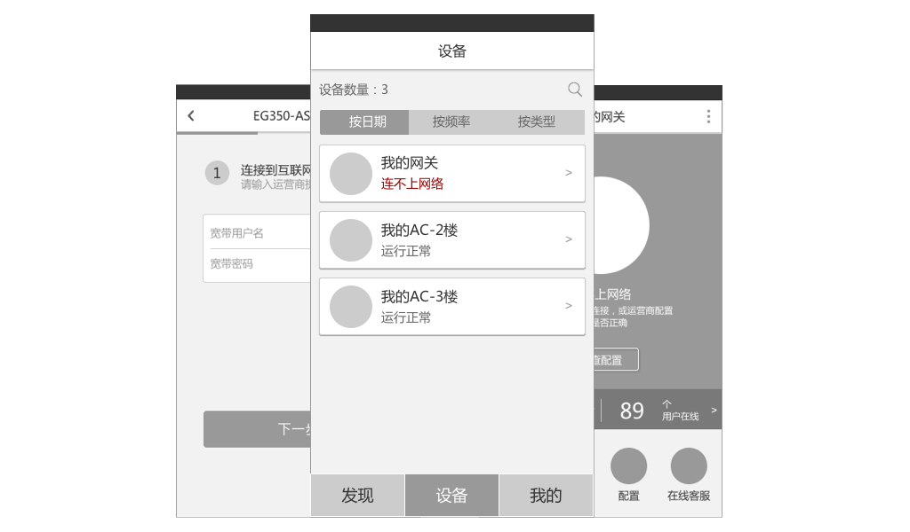
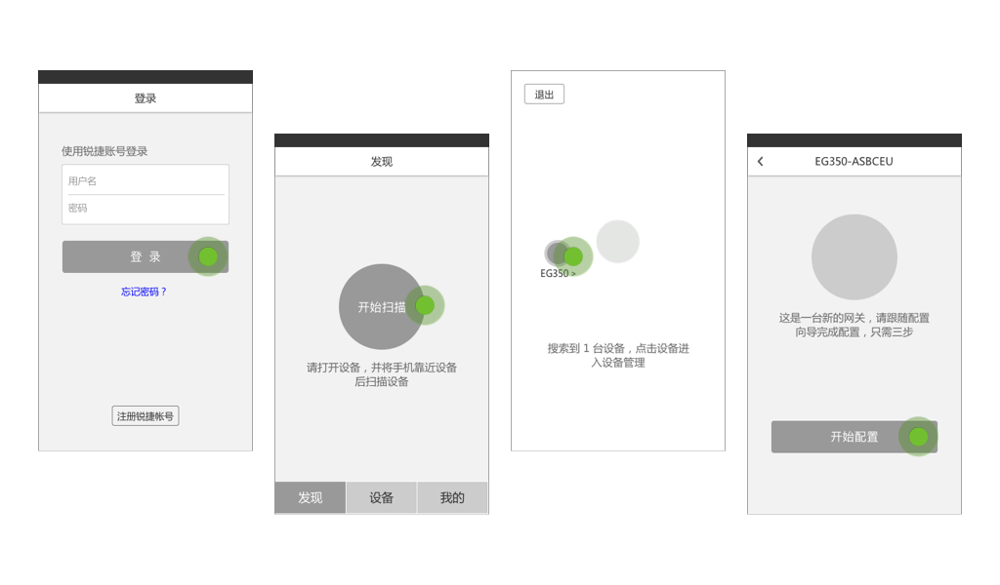
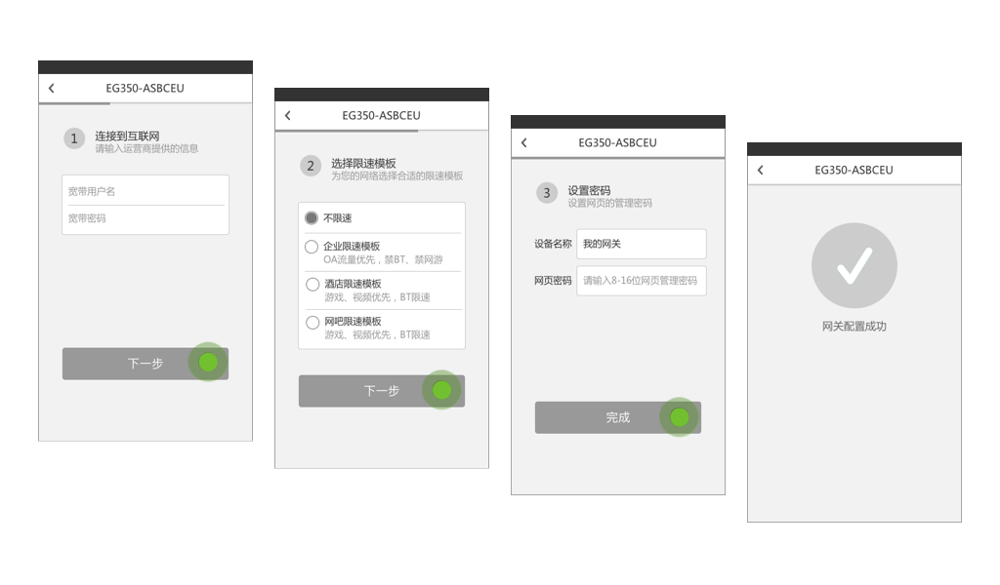
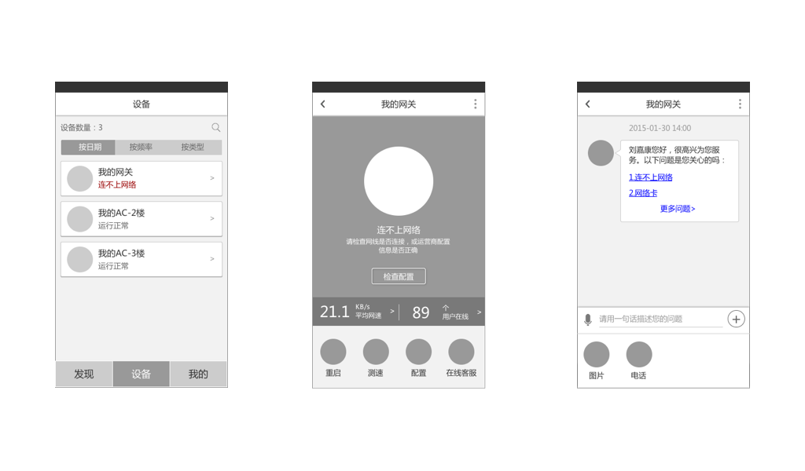
-
- 代理商和售后实施人员可以使用这个App来部署和维护网络设备。
- 项目花了一天时间快速画出可交互的概念原型，拿到用户处进行验证。通过这种方式，能够在很短时间内判断出产品设想和用户需求是否一致，用户是否接受这个产品，设计是否存在可改进的地方。
-
CM Rainbow
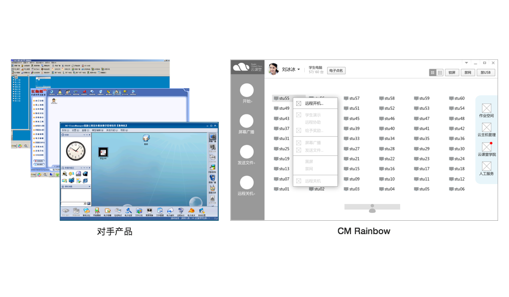
-
- 云课堂提供了计算机机房软硬一体的解决方案。CM Rainbow全称Class Manager Rainbow，是机房教学过程中，老师和学生使用的教学软件。在开发CM Rainbow前，市面上已经存在许多同类产品，比如极域、苏亚星、红蜘蛛等，但它们功能太多、操作太复杂。鉴于此，我们重新设计了一个，更贴合用户实际需要，操作简单好上手的教学软件。
-
CM Sunny
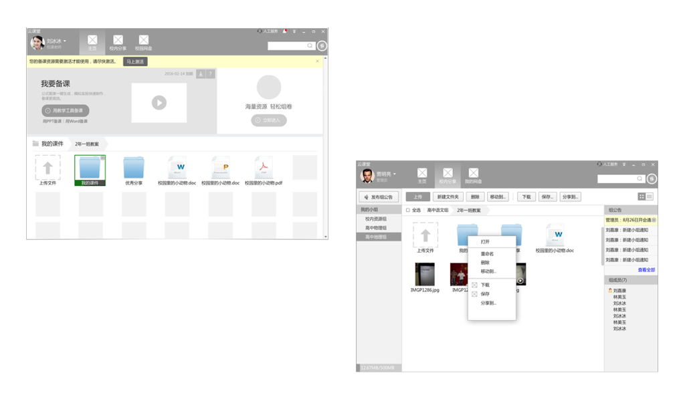
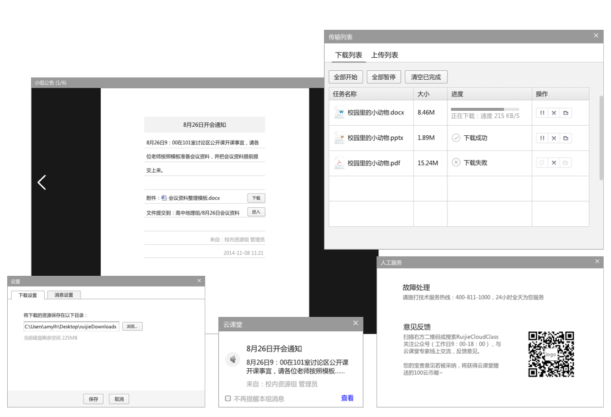
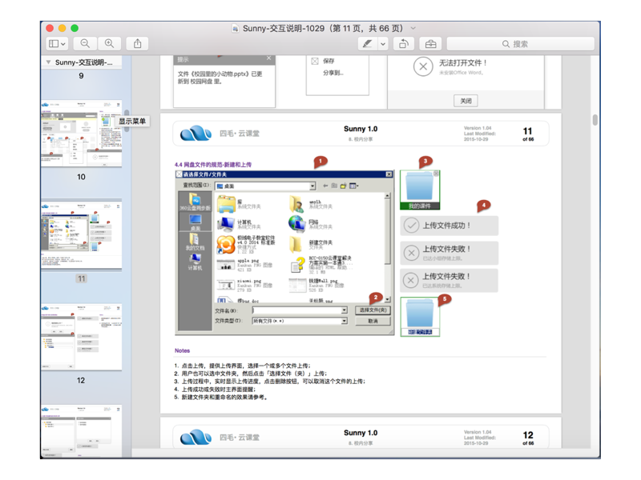
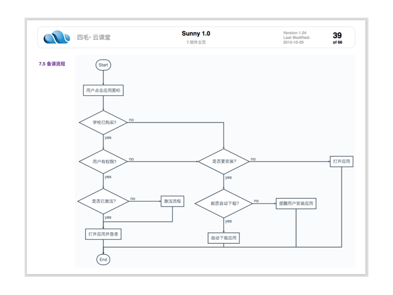
-
- CM Sunny全称Class Manager Sunny，是云课堂办公解决方案中的教学软件。老师可以在家中备课，到教室后登录系统直接打开课件上课。
- 使用Keynote+Markdown编写完整的交互设计说明。